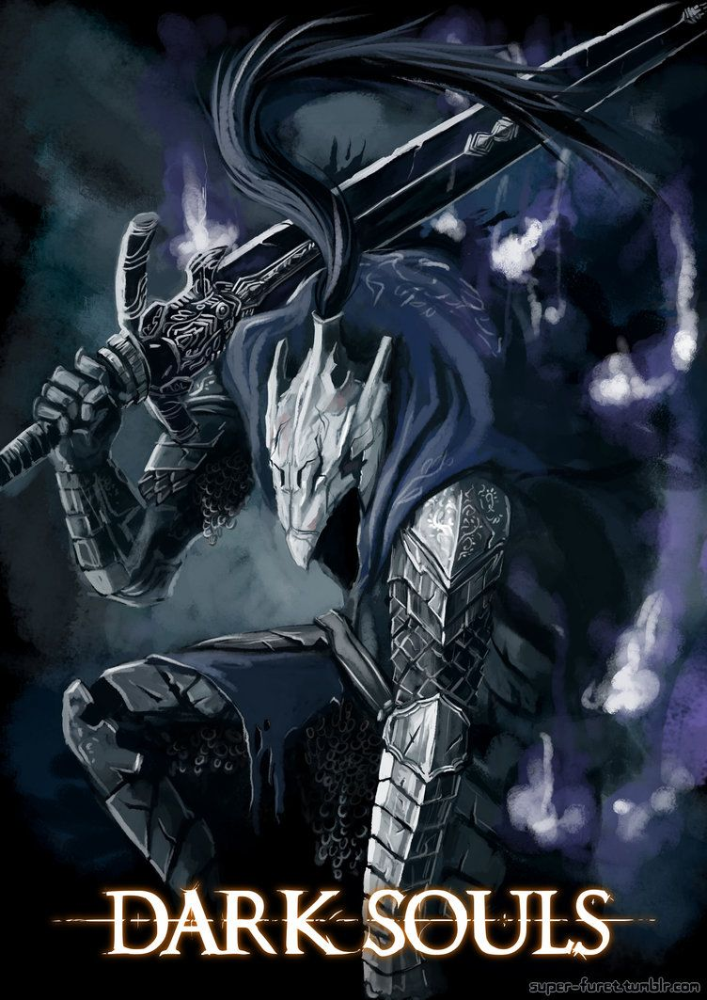
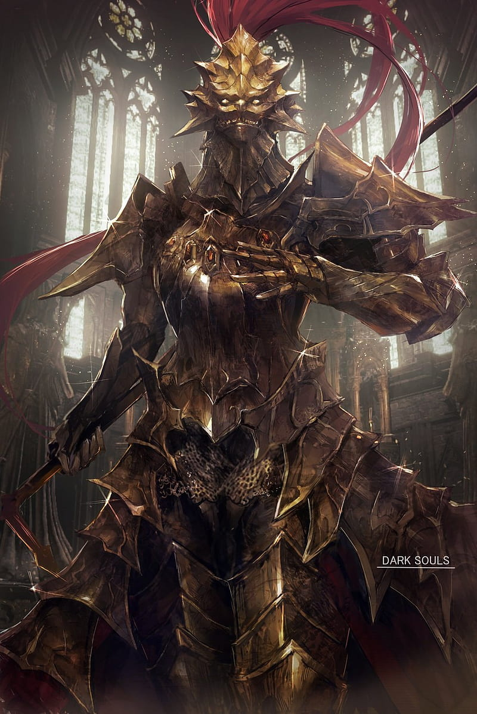
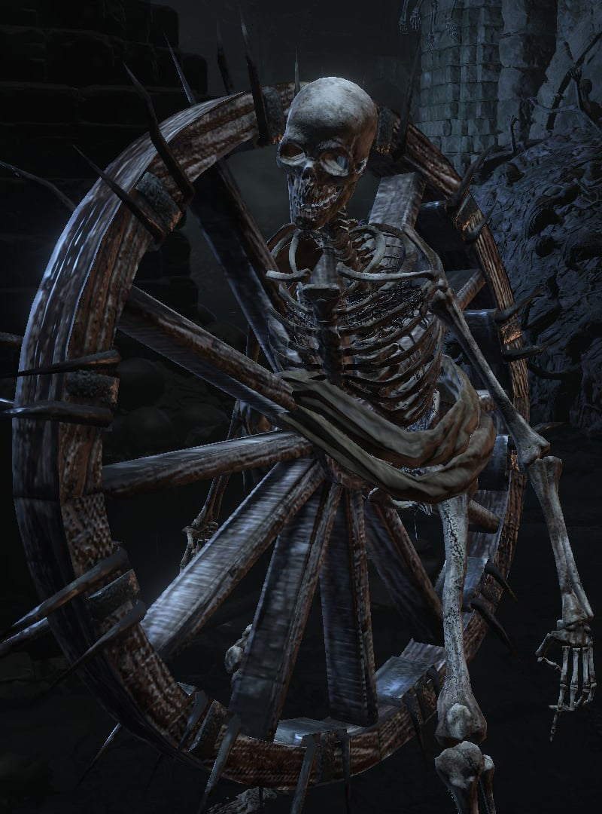

Atualizações Recentes
@firekeeper Preciso de ajuda com builds

@abysswalker Alguem sabe como passar do Manus?

Todas as Atualizações
@dragonslayer Derrotei o Kalameet de primeira
Sugestões
Friede
Seguir
@sister.friede

Bone Wheel
Seguir
@bone.wheel
Siegmeyer of Catarina
seguir
@onion.man